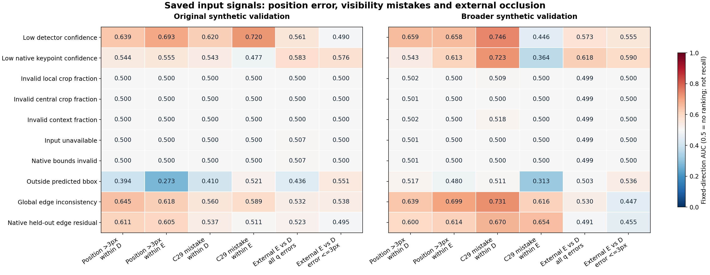

같은 학습 예산으로 기존 합성을 반복한 대조군보다 자료 범위를 넓힌 모델이 합성 검증에서 보임·외부 가림을 함께 개선했습니다. 전체 기준은 미통과이고 새 실사 평가는 하지 않았습니다. 마지막 실사 평가는 보임 1137/1147, 외부 가림 35/90입니다.
| 같은 새 합성 검증 | 보임 recall | 외부 가림 recall | 외부 가림 precision |
|---|---|---|---|
| C16 | 99.10% | 34.62% | 76.27% |
| C28 | 95.15% | 75.38% | 53.85% |
| C29 | 96.73% | 86.15% | 66.67% |
C16은 이전 모델, C28은 기존 자료 반복, C29는 같은 추가 배치에 넓은 치수·시점 자료를 넣은 모델입니다. C29는 64개 source 조건 중 44개를 통과했습니다. 보임 보존·일부 같은 재질 가림·공개 source 조건은 아직 실패합니다. 새 모델을 채택하지 않았습니다.
초기 좌표의 GT 오차가 3px 이하인 합성 구간에서는 C29 보임 947/950, 외부 가림 36/37을 맞혔습니다. GT로 나눈 사후 진단이며 전체 성능을 대신하지 않습니다. 전체 새 검증의 이진 오판 74개 중 70개는 3px 초과 구간입니다. 이 연관성만으로 좌표 오류가 유일한 원인이라고 단정할 수는 없습니다.
기존 6144개와 새 20480개, 총 26624개를 유지했습니다. 초기 검출 confidence·키포인트 confidence, 원본 q8·L·영상 경계, 저장 crop의 유효 마스크, 고정된 2D 모서리 관계에서 10개 위험 신호와 58개 설명 변수를 만들었습니다. 입력 표와 TRAIN 입력 기반 구간을 정답·C29 출력 결합 전에 저장했습니다. 새 학습·모델 추론·실사 접근·PnP·좌표 보정은 0회입니다.
핵심: 낮은 confidence나 기하 불일치는 보임 오판과 일부 연관됩니다. 그러나 외부 가림 자체나 놓친 가림을 같은 단일 규칙으로 충분히 구분하지는 못했습니다. 입력 경계·crop 유효도는 대부분 정상이라 남은 오류의 주된 설명이 되지 못했습니다.
AUC 0.5는 해당 방향에서 순위 구별이 없는 수준입니다. 1에 가까울수록 선언한 위험 방향과 연관됩니다. 0.5 미만도 그대로 표시하며 결과를 보고 부호를 바꾸지 않았습니다. 아래는 recall/정확도가 아닙니다.

전체 2048점: 보임 D 828, 외부 가림 E 60, 자기 가림 S 320, 정답 불확실 U 840. 알려진 D/E의 입력 보류 4점, 전체 좌표 없음 8점.
| 위험 신호 | 위치 오류 >3px / 정답 D | 위치 오류 >3px / 정답 E | C29 오판 / 정답 D | C29 오판 / 정답 E | 외부 E 대 보임 D / 전체 | 외부 E 대 보임 D / ≤3px |
|---|---|---|---|---|---|---|
| 낮은 검출 confidence | 0.639 | 0.693 | 0.620 | 0.720 | 0.561 | 0.490 |
| 낮은 키포인트 confidence | 0.544 | 0.555 | 0.543 | 0.477 | 0.583 | 0.576 |
| local crop 유효 영역 부족 | 0.500 | 0.500 | 0.500 | 0.500 | 0.500 | 0.500 |
| 중심 crop 유효 영역 부족 | 0.500 | 0.500 | 0.500 | 0.500 | 0.500 | 0.500 |
| context 유효 영역 부족 | 0.500 | 0.500 | 0.500 | 0.500 | 0.500 | 0.500 |
| 입력 없음 | 0.500 | 0.500 | 0.500 | 0.500 | 0.507 | 0.500 |
| native 경계 오류 | 0.500 | 0.500 | 0.500 | 0.500 | 0.507 | 0.500 |
| 예측 bbox 밖 거리 | 0.394 | 0.273 | 0.410 | 0.521 | 0.436 | 0.551 |
| 전체 모서리 불일치 | 0.645 | 0.618 | 0.560 | 0.589 | 0.532 | 0.538 |
| 해당 점의 모서리 잔차 | 0.611 | 0.605 | 0.537 | 0.511 | 0.523 | 0.495 |
전체 4096점: 보임 D 1772, 외부 가림 E 130, 자기 가림 S 584, 정답 불확실 U 1610. 알려진 D/E의 입력 보류 2점, 전체 좌표 없음 0점.
| 위험 신호 | 위치 오류 >3px / 정답 D | 위치 오류 >3px / 정답 E | C29 오판 / 정답 D | C29 오판 / 정답 E | 외부 E 대 보임 D / 전체 | 외부 E 대 보임 D / ≤3px |
|---|---|---|---|---|---|---|
| 낮은 검출 confidence | 0.659 | 0.658 | 0.746 | 0.446 | 0.573 | 0.555 |
| 낮은 키포인트 confidence | 0.543 | 0.613 | 0.723 | 0.364 | 0.618 | 0.590 |
| local crop 유효 영역 부족 | 0.502 | 0.500 | 0.509 | 0.500 | 0.499 | 0.500 |
| 중심 crop 유효 영역 부족 | 0.501 | 0.500 | 0.500 | 0.500 | 0.499 | 0.500 |
| context 유효 영역 부족 | 0.502 | 0.500 | 0.518 | 0.500 | 0.499 | 0.500 |
| 입력 없음 | 0.501 | 0.500 | 0.500 | 0.500 | 0.499 | 0.500 |
| native 경계 오류 | 0.501 | 0.500 | 0.500 | 0.500 | 0.499 | 0.500 |
| 예측 bbox 밖 거리 | 0.517 | 0.480 | 0.511 | 0.313 | 0.503 | 0.536 |
| 전체 모서리 불일치 | 0.639 | 0.699 | 0.731 | 0.616 | 0.530 | 0.447 |
| 해당 점의 모서리 잔차 | 0.600 | 0.614 | 0.670 | 0.654 | 0.491 | 0.455 |
모든 10개 신호와 D/E를 표시합니다. Q1→Q5는 TRAIN 입력에서만 정한 위험 순위 구간이며 배포 기준이 아닙니다. 분모는 이 표의 타깃인 입력 사용 가능 D/E입니다. 전체 정답 D1772 중 입력 보류 2개는 본문 전체 집계와 보류 포함 실패 타깃에 남아 있습니다.
| 정답 | 신호 | Q1 | Q2 | Q3 | Q4 | Q5 |
|---|---|---|---|---|---|---|
| D | 낮은 검출 confidence | 1/295 | 4/384 | 15/525 | 13/288 | 23/278 |
| D | 낮은 키포인트 confidence | 1/124 | 8/401 | 8/438 | 5/393 | 34/414 |
| D | local crop 유효 영역 부족 | 0/0 | 0/0 | 0/0 | 0/0 | 56/1770 |
| D | 중심 crop 유효 영역 부족 | 0/0 | 0/0 | 0/0 | 0/0 | 56/1770 |
| D | context 유효 영역 부족 | 0/0 | 0/0 | 0/0 | 0/0 | 56/1770 |
| D | 입력 없음 | 0/0 | 0/0 | 0/0 | 0/0 | 56/1770 |
| D | native 경계 오류 | 0/0 | 0/0 | 0/0 | 0/0 | 56/1770 |
| D | 예측 bbox 밖 거리 | 0/0 | 0/0 | 0/0 | 37/1167 | 19/603 |
| D | 전체 모서리 불일치 | 4/339 | 3/350 | 6/308 | 15/453 | 28/320 |
| D | 해당 점의 모서리 잔차 | 3/218 | 3/244 | 6/363 | 20/483 | 24/462 |
| E | 낮은 검출 confidence | 2/11 | 5/24 | 4/43 | 2/24 | 5/28 |
| E | 낮은 키포인트 confidence | 0/4 | 6/18 | 4/25 | 4/35 | 4/48 |
| E | local crop 유효 영역 부족 | 0/0 | 0/0 | 0/0 | 0/0 | 18/130 |
| E | 중심 crop 유효 영역 부족 | 0/0 | 0/0 | 0/0 | 0/0 | 18/130 |
| E | context 유효 영역 부족 | 0/0 | 0/0 | 0/0 | 0/0 | 18/130 |
| E | 입력 없음 | 0/0 | 0/0 | 0/0 | 0/0 | 18/130 |
| E | native 경계 오류 | 0/0 | 0/0 | 0/0 | 0/0 | 18/130 |
| E | 예측 bbox 밖 거리 | 0/0 | 0/0 | 0/0 | 17/84 | 1/46 |
| E | 전체 모서리 불일치 | 1/26 | 5/21 | 1/16 | 5/37 | 6/30 |
| E | 해당 점의 모서리 잔차 | 0/18 | 2/15 | 3/26 | 6/39 | 7/32 |
목표가 과도해서 실패한다고 단정할 결과는 아닙니다. 고정 위치 근처의 합성 가림 판단은 개선 가능했으며, 넓은 학습 자료의 효과도 같은 예산 대조로 확인했습니다. 반면 실제 사진에서 같은 개선이 나는지, 초기 위치가 빗나간 경우 영상과 위치 신뢰도를 함께 써서 보임 오판과 가림 누락을 줄일지는 아직 검증해야 합니다.
다음 source 실험은 위치 신뢰도와 외부 가림을 다른 타깃으로 유지하고, 고정된 영상 증거와 초기 입력 정보를 함께 쓰는 통제 실험으로 준비합니다. confidence 하나로 가림을 결정하거나 GT 오차로 보류시키지 않습니다. 이전 G42 추가 실험은 외부 가림 개선 없이 보임 오판이 늘었으므로, 단순 기하 추가의 성공을 전제하지 않습니다. 현재 실사 자료로 학습·문턱·모델을 선택하지 않습니다.
이전 자료 범위 대조 결과와 실제 저장 crop 비교 보기
/home/minjae/Documents/Codex/2026-10-20/task-2/pallet-keypoint-visibility/query_visibility_saved_query_reliability_20261024_v138/input_only_reliability_v1/INPUT_SEAL.json 6691fd506f58f8335be0afc898a56b8f31ed21a61de7440c5db8bfe47c4f54cb/home/minjae/Documents/Codex/2026-10-20/task-2/pallet-keypoint-visibility/query_visibility_saved_query_reliability_20261024_v138/saved_observability_diagnosis_v1/DIAGNOSIS_SEAL.json 0872ad6105050a4b78dbe87c29c9bf1d2fe22375478a3efd365bb811f0ce14ed/home/minjae/Documents/Codex/2026-10-20/task-2/pallet-keypoint-visibility/query_visibility_saved_query_reliability_20261024_v138/saved_observability_diagnosis_v1/BINNING_SEAL_BEFORE_GT.json 61caf9a0bcfe944fed19a2151b826ac15629743520ff0a1340c6baecb3fbf296/home/minjae/Documents/Codex/2026-10-20/task-2/pallet-keypoint-visibility/query_visibility_saved_query_reliability_20261024_v138/independent_design_review/SAVED_DIAGNOSIS_REVIEW.json 0d711a5ea91e1bd093a252a58e26cf42877325b10c6b0746b519bdb5a0c4240b/home/minjae/Documents/Codex/2026-10-20/task-2/pallet-keypoint-visibility/query_visibility_saved_query_reliability_20261024_v138/saved_risk_interpretation_v1/NEXT_STEP_ASSESSMENT.json 7afc7c620a4337d574edbe47480c44439f0c01f6855f9aaa02234b3a31d22890/home/minjae/Documents/Codex/2026-10-20/task-2/pallet-keypoint-visibility/query_visibility_continuous_source_coverage_control_20261024_v137/ROOT_RESULTS_KO.json f7399eb665ef37f103ab1021b68c8d67677615dd4a0d172bd56c981e94fab710/home/minjae/Documents/Codex/2026-10-20/task-2/pallet-keypoint-visibility/query_visibility_saved_query_reliability_20261024_v138/FIXED_SIGNAL_VAL_AUC.png 0adc170f44739b4a76765b27759cf5990d51854c349b904032f0dd24baca2a64/home/minjae/Documents/Codex/2026-10-20/task-2/pallet-keypoint-visibility/query_visibility_saved_query_reliability_20261024_v138/saved_observability_diagnosis_v1/ALL_FIXED_SIGN_AUC_AND_TRAIN_BIN_COUNTS.jsonl a13654a5b00b156805539d79244ee02593d8bdb0b7f04d80cc472a2e6774997e